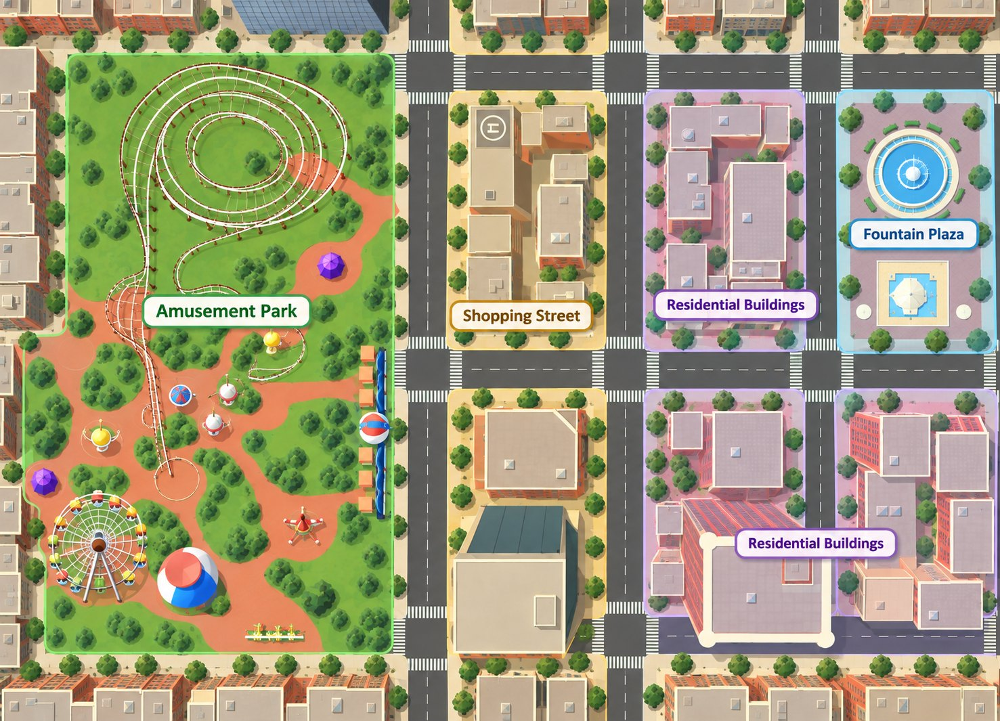

The brief
Change the content, keep the rest.
A Cornell PhD study, run with Botucatu Medical School (UNESP, Brazil) and Cornell's Virtual Embodiment Lab, compares natural and urban environments. I translated the nature world into a matched Unity city — same scale, pathways, proportions and four zones — so only the environment differs.
Unity developmentEnvironment designResearch assistant
4Zones, matched to the nature world
16Objects in the discovery task
1Shared interaction sequence
The city
Four zones, one connected map.

Ferris wheel, rollercoaster and winding paths.
Discovery
Find an object, choose to watch.
- Walk the city
- Approach an object
- A video prompt appears
- Watch, or keep exploring
Mirrors the bird discovery in the nature world, so both versions ask the same thing of the player.
Ready for the study.
Tablet build, in Brazilian Portuguese.
First-person navigation, object-triggered video, a real-time map and Brazilian Portuguese localization, prepared for planned use in Brazil. This page makes no claim about patient outcomes.